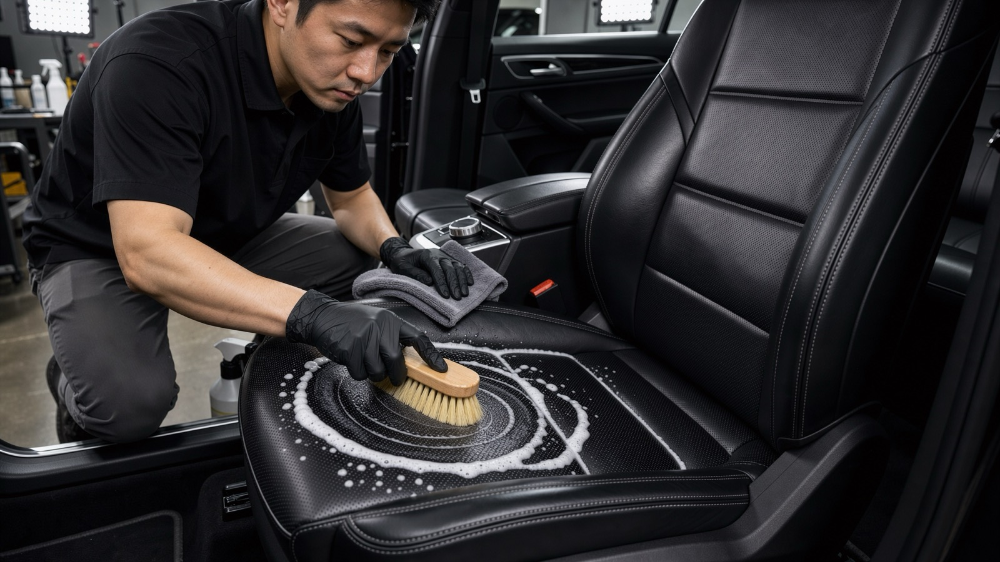
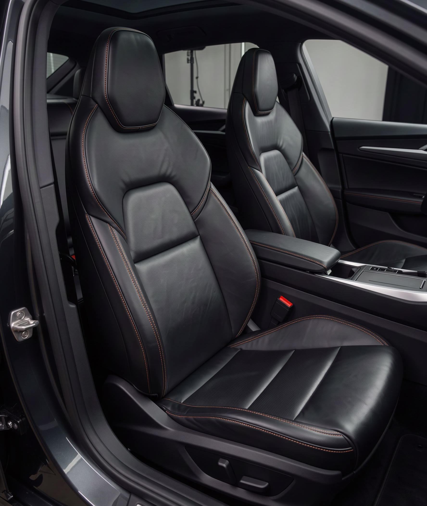

Plamy usunięte, nie przykryte
Ekstrakcja wyciąga brud z głębi tapicerki, a nie rozmazuje go po powierzchni.
Szanujemy Twoją prywatność
Używamy plików cookies niezbędnych do działania strony. Za Twoją zgodą korzystamy też z cookies analitycznych (Google Analytics), żeby wiedzieć, co ulepszać, i marketingowych (piksel Meta, Google Ads), żeby mierzyć skuteczność reklam. Możesz zaakceptować wszystkie, odrzucić wszystkie albo wybrać sam. W tej wersji demonstracyjnej nie wczytujemy żadnych narzędzi śledzących. Polityka prywatności.
Dla rodzin, właścicieli psów i kierowców, którzy kupili auto po kimś. Usuwamy plamy i źródło zapachu, a skórę czyścimy i zabezpieczamy, zamiast przykrywać ją błyszczącym preparatem.

Pracujemy na każdym materiale osobno: inaczej czyścimy skórę, inaczej tkaninę, a jeszcze inaczej podsufitkę, której nie wolno przemoczyć.
Ekstrakcja wyciąga brud z głębi tapicerki, a nie rozmazuje go po powierzchni.
Usuwamy źródło zapachu i neutralizujemy go, zamiast maskować zapachem choinki.
Skóra wygląda jak fabryczna: matowa, odżywiona i odporna na zabrudzenia z dżinsów.
Prowadnice foteli, kratki nawiewów, szczeliny przy konsoli. Tam brud siedzi latami.
Impregnat na tkaninę i skórę sprawia, że kolejną plamę zetrzesz chusteczką.
Dostajesz zdjęcia każdej strefy, więc widzisz, co dokładnie zrobiliśmy.
Każdy materiał czyścimy inną metodą. Lupy pokazują, co dzieje się z fotelem.

Usuwamy sebum po dłoniach i włosach. Skóra wraca do matowego wykończenia.
Szwy czyścimy miękką szczoteczką, żeby kolor nici znowu kontrastował ze skórą.
Zabezpieczenie ogranicza przetarcia od dżinsów i ułatwia usuwanie zabrudzeń.
Sprawdzamy materiały, plamy i źródło zapachu. Opróżniamy auto z rzeczy i pakujemy je w podpisane pudło.
Sprężone powietrze, pędzle i odkurzacz. Wyciągamy brud z prowadnic, kratek i szczelin.
Tapicerkę materiałową pierzemy ekstrakcyjnie, skórę czyścimy miękkimi szczotkami, plastiki matowymi preparatami.
Wnętrze schnie w ciepłej hali. Jeśli trzeba, neutralizujemy zapach ozonem. Na koniec impregnat i odżywka do skóry.
Jasna tkanina, foteliki, przekąski w podróży. Zobacz więcej realizacji

„Troje dzieci w aucie na co dzień. Byłem pewien, że plam na fotelach nie da się usunąć. Odebrałem auto, które pachnie neutralnie, a nie choinką.”
Cena zależy od wielkości auta, materiałów (skóra, tkanina, Alcantara) i stopnia zabrudzenia. Podajemy jedną kwotę po zdjęciach lub oględzinach.
W większości aut tak, ale wymaga to prania wszystkich materiałów, czyszczenia podsufitki i neutralizacji ozonem. Przy bardzo zadymionym aucie mówimy uczciwie, czego się spodziewać.
Suszymy je w ciepłej hali, więc odbierasz auto suche w dotyku. W głębi pianki wilgoć może zostać do doby, dlatego warto auto przewietrzyć.
Tak, na terenie Poznania i w promieniu 30 km odbieramy i odwozimy auto.
Zostaw numer, oddzwonimy i poprosimy o kilka zdjęć z telefonu. Zwykle to wystarczy do wyceny.
Oddzwaniamy w ciągu 2 godzin roboczych z widełkami ceny i wolnym terminem.